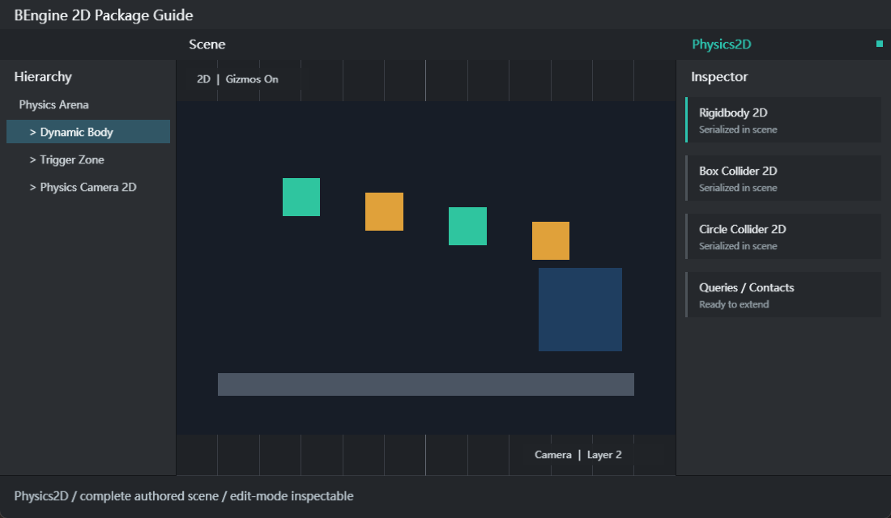

Rigidbody2D
mass、gravityScale、linear/angularDamping、 bodyType、simulated、linear/angularVelocity、constraints、collisionDetectionMode 和 interpolation。提供 AddForce、AddTorque、MovePosition、Sleep/WakeUp。
Physics2D 是单线程、场景隔离的确定性 2D 物理系统。它在 FixedUpdate 中模拟 Dynamic/Kinematic/Static 刚体，支持四种 Collider、Material、连续碰撞、查询、触发器和消息回调。

Assets/Examples/RigidbodyAndQueries/res/Physics2D.scene.yaml。不要在 Update 中按可变帧率直接手动推进物理。默认由引擎 FixedUpdate 模拟； 仅在关闭 autoSimulation 后使用 Physics2D.Simulate，并传入固定正步长。
| 示例 | 场景中直接包含 | 操作 |
|---|---|---|
| Rigidbody And Queries | Dynamic Body、BoxCollider、Bouncy Material、Floor、Camera2D | Space 重置并 AddForce；向下 Raycast；Console 输出 Collision contacts。 |
| Triggers And Queries | Trigger Area、Kinematic Probe、多个 Circle Target、Camera2D | Probe 穿越 Trigger；Space 执行 OverlapCircle、OverlapBox、CircleCast。 |
示例对象、Collider、Rigidbody 和 Camera 均序列化在 scene.yaml 中；脚本只负责交互与 API 调用， 不会在 Play 时从空场景临时构造全部内容。
mass、gravityScale、linear/angularDamping、 bodyType、simulated、linear/angularVelocity、constraints、collisionDetectionMode 和 interpolation。提供 AddForce、AddTorque、MovePosition、Sleep/WakeUp。
isTrigger、offset、material。 attachedRigidbody 查找同对象刚体；bounds 和 ClosestPoint 可用于编辑器或运行时查询。
Box 使用 size；Circle 使用 radius；Capsule 使用 size 与 Vertical/Horizontal direction；Polygon 使用按顺序排列的 points。
friction 控制切向阻尼，bounciness 控制反弹。 Material 可由 Collider 引用；两个接触体的材质共同影响解算结果。
| Body Type | 行为 | 常见用途 |
|---|---|---|
| Dynamic | 受重力、力、冲量与碰撞解算影响 | 角色、箱子、弹丸 |
| Kinematic | 由 MovePosition/MoveRotation 驱动，可产生 Trigger/接触 | 移动平台、探针 |
| Static | 不积分运动，作为固定几何 | 地面、墙体 |
| API | 结果 |
|---|---|
| Raycast / RaycastAll | 返回最近命中或按距离排序的全部 RaycastHit2D。 |
| OverlapCircle / CheckCircle | 返回圆内 Collider 或只判断是否存在。 |
| OverlapBox / CheckBox | 返回轴对齐区域内 Collider 或只判断。 |
| CircleCast | 沿方向扫掠一个圆，适合角色前方与落地检测。 |
| SyncTransforms | 手动移动 Transform 后，在查询前同步物理代理。 |
| IgnoreCollision / GetIgnoreCollision | 设置/读取同一物理场景中的 Collider 对忽略状态。 |
| AddForce / AddTorque / AddForceAtPosition | 按 Force、Acceleration、Impulse 或 VelocityChange 施力。 |
using BEngine.Physics2D;
using World = BEngine.Physics2D.Physics2D;
public override void FixedUpdate()
{
body.AddForce(Vector2.right * thrust, ForceMode.Force);
}
public bool IsGrounded()
{
World.SyncTransforms();
return World.CircleCast(transform.position, 0.4, Vector2.down,
out var hit, 0.8, groundMask, QueryTriggerInteraction.Ignore);
}RaycastHit2D 提供 collider、point、normal、distance、rigidbody 与 transform。所有 query 都接受 Layer Mask 和 QueryTriggerInteraction（UseGlobal、Ignore、Collide）。
| OnCollisionEnter2D(Collision2D) | 两个非 Trigger Collider 首次接触。 |
|---|---|
| OnCollisionStay2D(Collision2D) | 接触持续的固定步。 |
| OnCollisionExit2D(Collision2D) | 接触结束。 |
| OnTriggerEnter2D(Collider2D) | 进入 Trigger 区域。 |
| OnTriggerStay2D(Collider2D) | 停留在 Trigger 区域。 |
| OnTriggerExit2D(Collider2D) | 离开 Trigger 区域。 |
Collision2D 包含 collider、rigidbody、relativeVelocity、contacts 和 contactCount； GetContact(index) 返回 point、normal 等接触数据。回调方法可放在同一 GameObject 的启用 MonoBehaviour 上。
外部 Collider 或行为组件可实现 OnDrawGizmosSelected 绘制检测范围； 用户可从 Scene Gizmos 类型列表独立开关。批量设置 Material、Layer、Trigger 的命令应放入 Editor asmdef，并通过 Tools/项目名 菜单注册；所有持久化操作只允许在非 Play 状态。
| 对象穿透 | 启用 Continuous，检查 Collider 尺寸与 fixedDeltaTime，避免一次 MovePosition 跨越过远。 |
|---|---|
| 没有回调 | 确认 Collider 启用、Layer Mask 允许、至少一方可模拟；Trigger 与 Collision 回调签名不同。 |
| Query 查不到刚移动对象 | 调用 SyncTransforms，确认 query 的 layerMask 与 trigger policy。 |
| 多个 Scene 相互影响 | 报告问题；每个 Scene 应有独立 PhysicsWorld2DState 和 IgnoreCollision 对。 |
| 停止 Play 后速度消失 | 运行时镜像隔离的预期结果；调试状态不会保存到 asset。 |